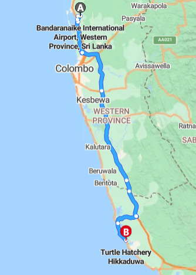

The Hikkaduwa Turtle Hatchery
Let's Pay a Visit To The Hikkaduwa Turtle Hatchery
The Hikkaduwa Turtle Hatchery located in the coastal belt of the town of Hikkaduwa in the Southern Province of Sri Lanka is a conservation initiative established for the objective of protecting the eggs and the hatchlings of sea turtles from threats which include predators, poachers and other dangers.The eggs of sea turtles collected from surrounding beaches are transported to the hatchery where they are buried in a safe environment until they hatch. The young turtles which hatch from these eggs are raised in tank suntil they are strong enough to be released back into the ocean.
In addition to conservation efforts, educational programs and tour for both local as well as international tourists to learn all about sea turtles and their habitats are offered by the hatchery. Furthermore, visitors also get the opportunity to get up close and personal with the hatchling turtles and even take part in their return to the ocean.The Hikkaduwa Turtle Hatchery being one of the few registered turtle hatcheries in Sri Lanka performs a very important part in protecting and preserving sea turtle populations in the country. It is a must-visit destination for anyone and everyone who is interested in the conservation of marine and wildlife.
Images of The Hikkaduwa Turtle Hatchery


Location of The Hikkaduwa Turtle Hatchery
How to Reach Hikkaduwa Turtle Hatchery from Katunayaka Bandaranaike International Airport
- Upon leaving the airport, take the Colombo-Katunayake Expressway (E03) south towards Colombo.
- Reach the Southern Expressway exit (E01) by continuing to drive on the expressway for approximately another 17 kilometers.
- Once you reach the exit, drive on the Southern Expressway (E01) which heads South towards Matara
- Drive continuously on the Southern Expressway (E01) until you reach the galle exit in anbout 78 kilometers.
- Merge onto the Colombo-Galle-Hambantota Matara Highway (E01/A2) after taking the Galle exit.
- For approximately 23 kilometers continue on the Colombo-Galle-Hambantota-Matara Highway (E01/A2) until you reach Hikkaduwa
- The Hikkaduwa Sea Turtle Hatchery & Rescue Center is located near Hikkaduwa Beach, so you may need to turn off the main road and follow the signs towards the beach area
What Our Visitors Say
This is a place to breed and reserve turtles and free to the sea. As per the information received from them, the place was closed for more than 2 years and as a result not much turtles can be seen there. Lots of tanks were empty except few with very old disabled turtles and with very little ones.
They only issue tickets for foreigners, and it's completely free for locals, but any desired amount is accepted as donations. Also turtles can be freed to the sea for special occasions as how it happens with birds and cows.
Nuwan Senaratne
Not worth for money! It has many tanks with turtle At the back of the establishment was the hatchery, an area which is securely fenced off. The eggs are buried here until they hatch. I discovered that sea turtle hatcheries may not actually be helping the conservation of these animals at all. As a matter of fact, hold¬ing them in tanks is just about the most devastat¬ing experience the turtles could ever encounter! I personally didn't like this place. We finished the hatchery sight seeing in just 5 minutes
MoniCa
Definitely worth visiting. The manager took us (and all other visitors) through the whole running of the hatchery and we even got to come back see the release of the newborn turtles of the day at 5.30pm - purely magical. He’s working for a great cause, saving hundreds of baby and adult turtles every year and educating the local community and visitors. His dad started this hatchery and sadly died in the tsunami in 2004 with almost the entire family. He rebuilt everything from nothing. Truely an inspiring man.